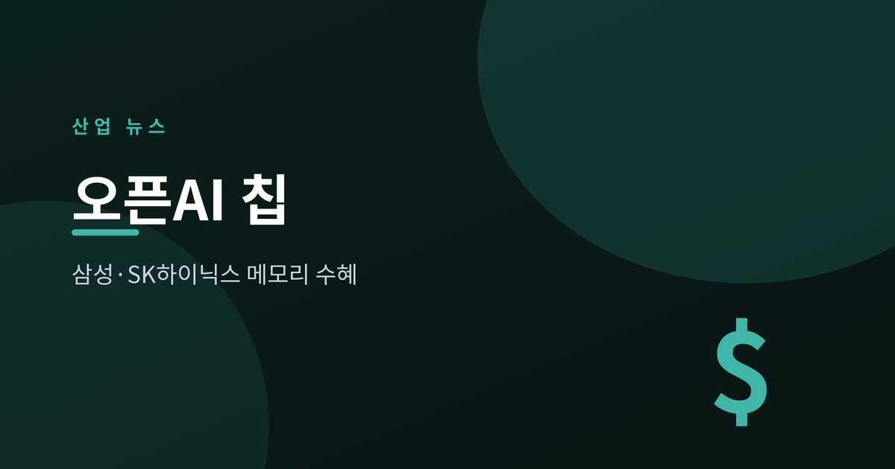
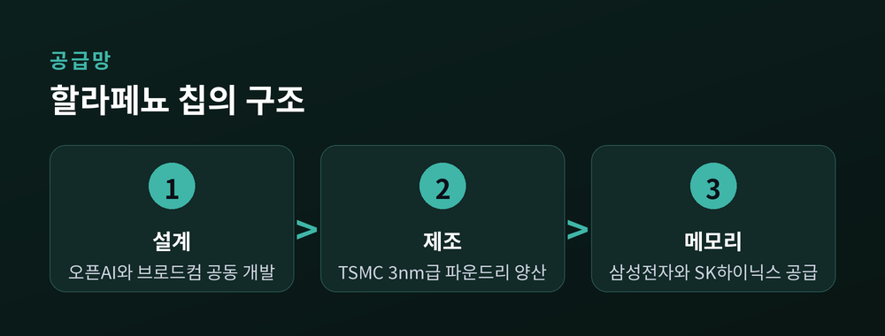
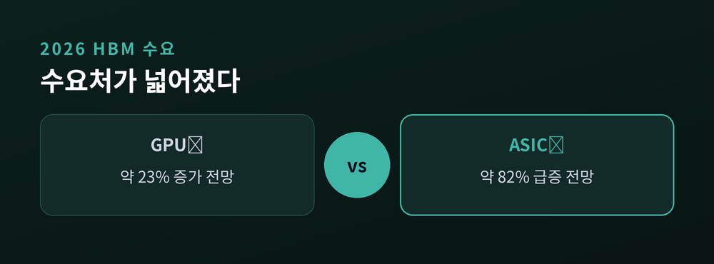
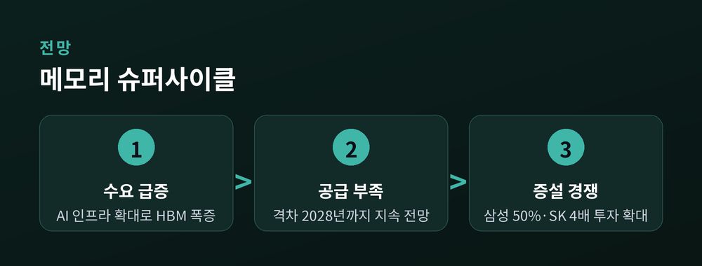

'탈엔비디아' 속 메모리 수혜

오픈AI가 처음으로 자체 AI칩을 내놓았습니다. 그런데 이 칩의 심장부에 삼성전자와 SK하이닉스의 메모리가 들어갑니다. 오늘은 이 소식이 왜 한국 반도체 업계에 중요한지 차분히 짚어보겠습니다.
오픈AI는 2026년 6월 24일(현지시간) 첫 자체 개발 AI칩 '할라페뇨(Jalapeño)'를 공개했습니다.
AI 모델의 학습이 아니라 추론에 특화된 맞춤형 칩(ASIC)입니다. 이미 학습을 마친 대형 언어모델을 실제로 돌릴 때 쓰는 칩입니다. 반도체 설계기업 브로드컴과 지난해부터 공동 개발했고, 대만 TSMC가 3nm급 공정으로 만듭니다. 설계에서 완성까지 약 9개월밖에 걸리지 않은, 이례적으로 빠른 개발이었습니다.
여기서 눈여겨볼 대목이 있습니다. 호크 탄 브로드컴 최고경영자(CEO)는 이 칩에 삼성전자와 SK하이닉스가 메모리를 공급한다고 밝혔습니다. 성능에 대해서는 "엔비디아 블랙웰, 구글 TPU와 대등하다"고 했습니다. 전력당 성능이 특히 우수하다는 초기 평가도 나왔습니다. 칩은 올해 말 데이터센터에 본격 배치될 예정입니다.

빅테크의 '탈엔비디아' 움직임이 빨라지고 있습니다. 구글·아마존·메타에 이어 오픈AI까지 자체 칩 대열에 섰습니다.
언뜻 보면 반도체 업계 전반의 악재처럼 들립니다. 하지만 결이 다릅니다. 엔비디아 GPU를 쓰든 커스텀 칩을 쓰든, 고대역폭 메모리(HBM)는 반드시 필요하기 때문입니다. HBM은 방대한 데이터를 빠르게 주고받는 AI 칩의 필수 부품이고, 이 시장은 삼성과 SK하이닉스, 미국 마이크론 세 곳이 사실상 나눠 갖고 있습니다.
예전엔 HBM 수요가 엔비디아 GPU에 집중됐습니다. 지금은 오픈AI·구글·아마존의 자체 칩으로 공급처가 넓어졌습니다. 삼성과 SK하이닉스 입장에서는 고객이 늘어난 셈입니다.
수치도 이를 뒷받침합니다. 골드만삭스는 2026년 GPU向 HBM 수요가 약 23% 늘 때, ASIC向 수요는 약 82% 급증한다고 봤습니다. 시장조사기관 트렌드포스는 올해 커스텀 칩 출하 성장률(약 44.6%)이 상용 GPU(약 16.1%)를 처음으로 앞선다고 전망했습니다.
다만 균형 있게 볼 필요가 있습니다. 엔비디아는 여전히 AI 가속기 시장의 약 70~80%를 쥐고 있습니다. 그래서 '탈엔비디아'라기보다 '공급 다변화'로 읽는 편이 정확합니다. 한국 기업으로서는 어느 쪽이 이기든 메모리를 판다는 점이 핵심입니다.

AI 수요 폭증으로 메모리 부족은 당분간 이어질 전망입니다. 여러 분석은 이 공급 격차가 2028년까지 지속될 것으로 봅니다.
삼성과 SK하이닉스는 증설로 응수하고 있습니다. 삼성은 2026년 생산능력을 약 50% 늘리고, SK하이닉스는 인프라 투자를 4배 이상 확대한다고 밝혔습니다.
차세대 제품 경쟁도 뜨겁습니다. SK하이닉스는 HBM 출하량 기준 시장 1위(약 62%)를 지키고 있지만, 삼성이 최근 12단 HBM4E 샘플을 업계 처음으로 내놓으며 추격에 나섰습니다. 다음 세대인 HBM4가 본격화되면 두 회사의 경쟁은 한층 치열해질 전망입니다.
물론 낙관만 할 일은 아닙니다. 실적 전망치(삼성 약 80조 원, SK하이닉스 약 50조 원 관측)는 아직 확정이 아닙니다. 메모리 가격은 본래 오르내림이 큰 품목이고, 미·중 수출 규제나 2028년 신규 팹 가동에 따른 공급 완화도 흐름을 바꿀 수 있는 변수입니다.

정리하면 이렇습니다. 오픈AI의 자체 칩은 엔비디아엔 도전이지만, 그 안의 메모리를 대는 한국 기업에는 새로운 문이 열린 사건입니다.
"칩의 주인이 바뀌어도, 기억은 여전히 한국이 만든다."
다음 빅테크가 또 다른 자체 칩을 공개하는 날, 그 안에 어떤 이름이 새겨져 있을지 함께 지켜보시면 어떨까요.